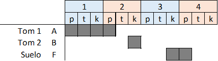
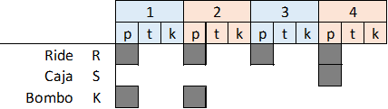
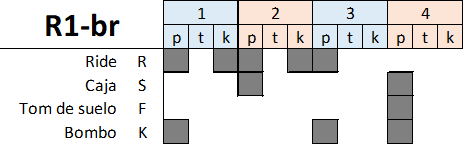

Intro: (Toms: 1)(R1: 8+8+8)(R1-r: 8) Estribillo: (R1-r: 8+7)(R1-br: 1) Estrofa: (R2: 8) Solo: (R1-r: 7)(R1-br: 1) Estrofa: (R2: 8) Solo: (R1-r: 7)(R1-br: 1) Estrofa: (R2: 8) Solo: (R1-r: 7)(R1-br: 1) Estrofa: (R2: 8) Estribillo: (R1-r: 1)(Toms2: 1)(x4)
Intro (Toms: 1)(R1: 8+8+8)(R1-r: 8) (R1-r: 8+7) Camina sobre el mar... Planea entre las cumbres... Cruza esa galaxia... (R1-br: 1) Y duerme entre las nubes... (R2: 8) Una sonrisa, una plegaria, una escalera y esa muralla. Siempre has sabido a quién amar y ver motivos para danzar. (R1-r: 7)(R1-br: 1) (R2: 8) Que nadie diga que no has venido o que has marchado y no han sentido falso reflejo de una ambición de ver que nadie es el mejor. (R1-r: 7)(R1-br: 1) (R2: 8) Tan sólo un rato, tan solo un tiempo, una esperanza en movimiento Arena, fuego, sal, agua y luz, también la muerte sin acritud. (R1-r: 7)(R1-br: 1) (R2: 8) Sube a tu antojo en libertad, que nadie mine tu voluntad. Levanta el vuelo y al recordar mira esa estrella y aquel lugar. (R1-r: 1) (Toms2: 1) Vuela sobre el mar... (R1-r: 1) (Toms2: 1) Planea entre las cumbres... (R1-r: 1) (Toms2: 1) Cruza esa galaxia... (R1-r: 1) (Toms2: 1) Y duerme entre esas nubes...